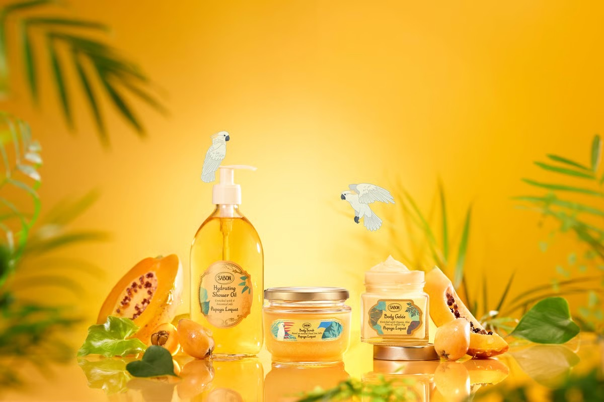
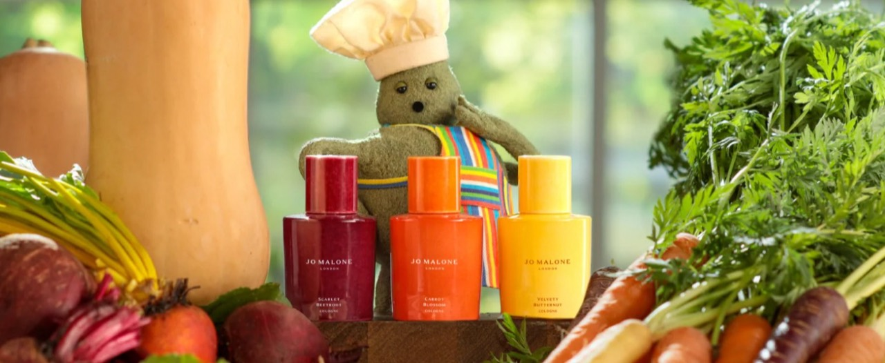
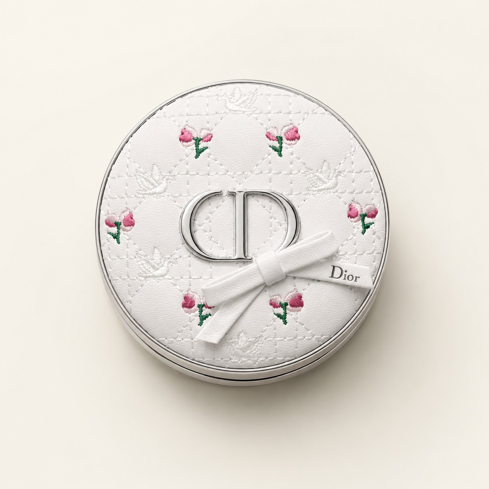

This Week
本週推薦
Body Care
SABON 熱帶果嶼 Papaya 限量系列
夏日果香身體保養沐浴去角質限量系列公司貨

夏天就是要這種清甜果香感。一聞就像走進熱帶島嶼，帶點木瓜果香的甜潤氣息，洗澡、去角質、保濕都變得超有度假感。
這系列很適合喜歡清爽果香、不想太厚重甜膩的人，從沐浴油到磨砂膏、凝凍、護手霜一次收齊，整個夏天都香香嫩嫩的。
- 7/23 上市｜預購約 8 月底到
- 8/14 上市｜預購約 9 月底到
- 8/21 上市｜預購約 9 月底到
- 公司貨｜限量系列售完不補
Fragrance
Jo Malone 限量英倫田園系列
香水香氛居家香氛英倫田園限量收藏公司貨

這次是很特別的田園蔬果香氛概念，不是一般甜甜花果香，而是帶有英倫花園感的清新、自然、很有收藏感。
適合喜歡乾淨綠意感、自然田園香、限量收藏款的人，香氣有記憶點又不會太甜膩，擺著也很有質感。
- 預購｜7/6 上市｜預計 8 月底出貨
- 公司貨

Couture Makeup
DIOR 高訂限量氣墊｜Flowery Bow 玫瑰
彩妝底妝限量外殼精品收藏公司貨
DIOR 這次真的美到很誇張。全新高訂限量氣墊外殼以乾淨白色為底，搭配細緻藤格紋、玫瑰小花點綴，正中央還有立體蝴蝶結與銀色 CD Logo，整體就是溫柔又高級的收藏感。
下單請告知氣墊款式色號：柔霧 / 水光。
Browse By Mood
依需求逛
下單說明
- 私訊官方 LINE 詢問 / 下單：https://lin.ee/5QwrADp
- 商品多為預購商品，請確認可等待後再下單。
- 限量系列售完不補，實際可訂數量以回覆為主。
- 下單請註明商品名稱 / 規格 / 色號（若有）。